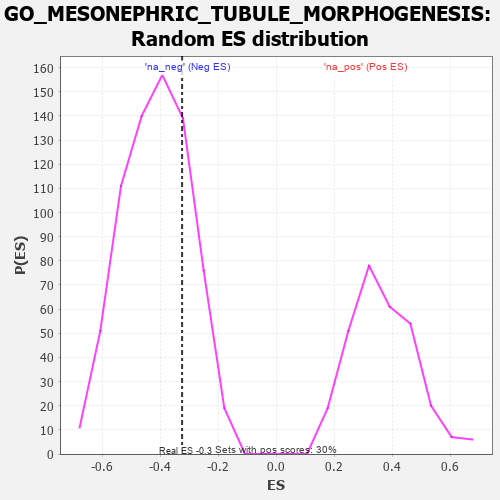

| | | Dataset | 7d |
| Phenotype | NoPhenotypeAvailable |
| Upregulated in class | na_neg |
| GeneSet | GO_MESONEPHRIC_TUBULE_MORPHOGENESIS |
| Enrichment Score (ES) | -0.32458895 |
| Normalized Enrichment Score (NES) | -0.78248775 |
| Nominal p-value | 0.765625 |
| FDR q-value | 0.99600464 |
| FWER p-Value | 1.0 |
Table: GSEA Results Summary
 Fig 1: Enrichment plot: GO_MESONEPHRIC_TUBULE_MORPHOGENESIS
Fig 1: Enrichment plot: GO_MESONEPHRIC_TUBULE_MORPHOGENESIS
Profile of the Running ES Score & Positions of GeneSet Members on the Rank Ordered List
| PROBE | GENE SYMBOL | GENE_TITLE | RANK IN GENE LIST | RANK METRIC SCORE | RUNNING ES | CORE ENRICHMENT | | 1 | SIX2 | | | 40 | 3.152 | 0.3214 | Yes |
| 2 | SMAD4 | | | 1860 | 0.326 | 0.1265 | No |
| 3 | FOXD1 | | | 2093 | 0.292 | 0.1275 | No |
| 4 | WNT4 | | | 3023 | 0.146 | 0.0259 | No |
| 5 | FMN1 | | | 3363 | 0.095 | -0.0069 | No |
| 6 | EYA1 | | | 3987 | -0.006 | -0.0846 | No |
| 7 | WNT11 | | | 4282 | -0.056 | -0.1158 | No |
| 8 | ILK | | | 4510 | -0.096 | -0.1343 | No |
| 9 | GATA3 | | | 4614 | -0.120 | -0.1348 | No |
| 10 | DLG1 | | | 4860 | -0.169 | -0.1481 | No |
| 11 | SMO | | | 5195 | -0.247 | -0.1645 | No |
| 12 | TCF21 | | | 5340 | -0.283 | -0.1534 | No |
| 13 | SOX8 | | | 5404 | -0.296 | -0.1306 | No |
| 14 | FAT4 | | | 6948 | -0.901 | -0.2313 | No |
| 15 | LHX1 | | | 7431 | -1.305 | -0.1567 | No |
| 16 | PKD2 | | | 7822 | -2.167 | 0.0187 | No |
Table: GSEA details [plain text format]

Fig 2: GO_MESONEPHRIC_TUBULE_MORPHOGENESIS: Random ES distribution
Gene set null distribution of ES for GO_MESONEPHRIC_TUBULE_MORPHOGENESIS